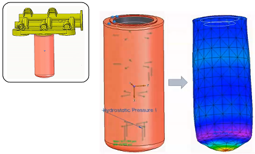
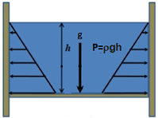
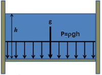
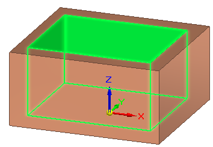
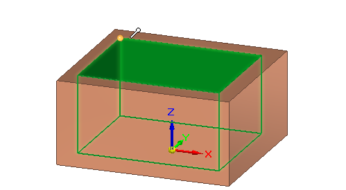
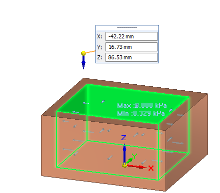
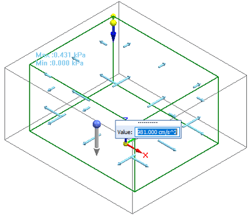
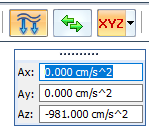
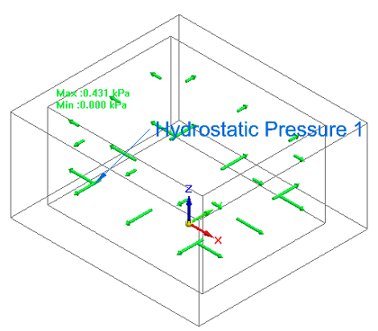
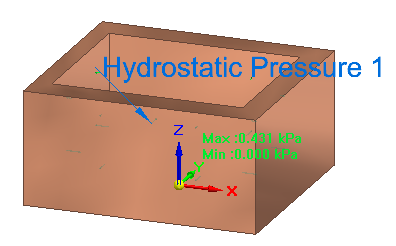

Apply a hydrostatic pressure load
In a linear static or coupled study, use the Hydrostatic Pressure load command to determine the maximum and minimum pressure that is exerted by a fluid at equilibrium, from a given point, due to the effect of gravity. Pressure is always normal to the surface of the container, with nonuniform pressure distribution.
This canister is part of a fuel filter assembly. The diesel fuel exerts pressure on the walls of the container. The fluid pressure on the bottom of the container is greater than the pressure at the top.

-
Choose Simulation tab→Structural Loads groups→Hydrostatic Pressure .
Note:The Hydrostatic Pressure load command bar guides you through the process of entering the information defined below:
-
Surfaces where the load is applied.
-
Height of fluid from bottom surface (h)
-
Gravity (g)
-
Fluid density (ρ)


-
-
Select one or more faces inside the container where you want to apply the hydrostatic pressure load, and then right-click or press Enter to accept.

-
 —Define the height of the fluid from the bottom surface by specifying the free space
above it. Right-click or press Enter to continue.
—Define the height of the fluid from the bottom surface by specifying the free space
above it. Right-click or press Enter to continue.Do either of the following to define the height of the fluid:
-
Click a keypoint in the container, and enter an offset value on the command bar.

-
Select the
 XYZ Point option from the Keypoints list, click a point, and then enter the exact location coordinate in the X, Y, Z
boxes.
XYZ Point option from the Keypoints list, click a point, and then enter the exact location coordinate in the X, Y, Z
boxes.
-
-
 —Define the gravity type, direction, and value. Right-click or press Enter to continue.
—Define the gravity type, direction, and value. Right-click or press Enter to continue.The gravity load symbol is displayed in the model space.
-
The default is to apply gravity in the negative Z direction of the part, and the gravity magnitude is shown in the Value input box. You can reverse the gravity direction using the Flip button on the command bar.

-
When you want to define gravity at an angle that is not parallel or perpendicular to a face, use direction vector components.
-
From the Direction Type list, choose the Components option.
-
In the dynamic input boxes, type the Ax, Ay, and Az gravity direction component values.

Example:If the part is oriented so that gravity will be applied along the X axis, then enter the gravity value in the Ax box, instead of the Az box.
If the part is oriented such that gravity will be applied at an XY angle from the base coordinate system, then enter the gravity value in the Ax and Ay boxes to define that angle.
-
Note:There can be just one gravity acceleration value applied to the study geometry. If you previously defined gravity using the Simulation tab—Body Loads group→Gravity command, then that acceleration value is applied automatically to the hydrostatic pressure load. To change the acceleration value, edit the gravity load definition.
-
-
Edit the value in the Density box on the command bar, which displays the density of water by default, 998 kg/m3. Right-click or press Enter to finish the hydrostatic pressure load.
The study geometry displays the hydrostatic pressure load symbols, the minimum pressure value at the top surface of the fluid, and the maximum pressure value at the bottom of the container.


To edit the hydrostatic pressure inputs, double-click the load label, Hydrostatic Pressure 1, and then on the command bar, click the icon for the input step that you want to
modify. For example, to change the height of the fluid, click the Free Space Selection button  , and then click a new keypoint or edit the offset value.
, and then click a new keypoint or edit the offset value.
How do I
Define a loadActivity: Apply a bearing load
Activity: Apply a centrifugal load
Activity: Apply a torque load
Activity: Apply a body temperature load
Learn more
Creating and using loadsLoad labels and symbols
Structural and body loads
Thermal loads
External loads (imported loads)
Loads directional steering wheel
Look up more details
Loads command barThermal Load Options dialog box
Radiation Load Options dialog box
Color dialog box
Graphic Symbol Size dialog box